Script System
Introduction to the Script System
Attention
The CETONI Elements Script system allows you to control and automate processes. Check the created scripts/programs as well as parameter entries before you execute them for the first time! CETONI assumes no liability for direct and/or indirect damage to your system or external hardware and software components caused by the scripts/programs you have created or by the entry of parameters that are not suitable or unfavorable for your specific application.
The software provides a powerful scripting system to set up automated process sequences.

The script system user interface consists of two single views:
Script Editor – this View shows the script programmed by the user as a function tree. It also features buttons for controlling script files and their execution.
Script Pool – contains all available script functions ordered in device categories.
Script Configuration – is used to configure the parameters of individual script functions.
Script Pool
Overview
Activate the Scripting button in the side bar to show the Script Pool.

In addition to the Script Pool, the Script Configuration area is also shown. The Script Pool contains all script functions that are available for programming scripts. The script functions are grouped into categories. In addition to a set of core functions, each device and each plug-in registers its own specific script functions in a separate category.
The user can open or close the categories in the Script Pool at any time. To open or close the function list of a category, simply double-click on the category name (figure below).

Script Pool Context Menu
Open the context menu by right clicking into the script pool:
Opens the selected User Library function for editing. |
|
|
Opens the User Library folder in file explorer |
|
Expands all categories |
|
Collapses all categories |
Script Editor
Introduction to Script Editor
The Script Editor is used for the graphic programming of scripts. The following items are numbered in the figure below:
Toolbar – is for loading, saving, and running scripts.
The header shows the script filename.
Function tree – shows a tree like program structure.
The currently executed function is highlighted in blue.
When you select a function by clicking, it is highlighted in the selected theme accent color (here orange)

Each single function is displayed in the function tree in a separate line. In this line all the important function parameters are visible for you (see figure below):

On the left side you will find the graphic icon of the function ❶. Immediate right of the icon at the top ❷ you will find the function name. Status information can be found to the right of the function name ❸. For many functions, these status information are visible only during the execution and are subject to change. Directly below the function name is a summary of all important function parameters ❹, that you have configured in the configuration area.
The Script Editor is a movable and dockable window: you may move and dock the Editor to another position within the main software window. To do this, drag & drop the window via the title bar to its new location using the computer mouse. If the Editor window is not visible, you may first have to activate it via in the main menu (figure below).

You can change the scaling in order to increase the clarity or adjust the display of the editor to suit your requirements. To do this, right-click in the editor to open the context menu and select the size of the display in the submenu Set Item Scaling:

The following sizes are available:
Small – very compact display for maximum clarity in complex function processes, the function parameters are no longer displayed.
Normal – normal size
Big – the icons and the function names are enlarged for optimal readability
Toolbar
|
Generates a new, empty script. |
Loads an existing script file into the Script Editor. |
|
|
Saves the currently active script. |
|
Saves the currently active script into a new script file. |
|
Stops the execution of the current script. By clicking the start button, the complete program will be restarted from the beginning. |
|
Request Script Stop - clicking this button sets the
|
|
Pauses the execution of the current script. By clicking the start button, the execution will resume from its current position. |
|
Starts the execution of a script or resumes a script after an interruption. |
|
Activates single step operation for debugging scripts. When single step operation is active, the script stops after the execution of each single script function. |
|
Click this button to trigger execution of next script function in single step operation mode. |
|
Scroll Lock - prevents the Script Editor from automatically scrolling to a function when the function is executed. |
|
Expands all functions in the script |
|
Collapses all functions in the script so that only the topmost function level is visible |
Tip
You can also load script files easily via drag & drop. Simply drag a script file from your file system over the script editor and drop it there.
Context Menu of Script Editor
If you click with the right mouse button on any function within the Script Editor, a context menu appears to quickly access additional actions (figure below).
The following functions are available from the context menu:
Opens the selected Script Function Call for editing (only when right clicking on a Script Function Call) |
|
Moves the selected function one position up |
|
|
Moves the selected function one position down |
Copies the selected functions to the clipboard |
|
|
Inserts the functions from the clipboard before the selected function |
|
Duplicates the selected function. This is a combination of copy and paste in one single step. |
|
Deletes the selected functions |
|
Deletes all functions in the script |
|
Replaces the selected functions with a function sequence and inserts the functions into this sequence. This allows you to quickly group functions together to structure your script, make it clearer and improve readibilty. |
|
Disables / enables the selected functions. This allows you to temporarily disable certain functions and enable them again later. Disabled functions are skipped during program execution. This corresponds to the functionality of commenting out source code in text-based programming languages. |
|
Expands all functions in the script |
|
Collapses all functions in the script so that only the topmost function level is visible |
|
Changes the scaling of the display of the script functions. This increases the clarity of complex scripts. |
|
Starts the script execution at the selected function. If variables are previously initialized in the script, it is possible that they are not yet initialized in this case. |
|
Terminates script execution immediately. All devices remain in their current state, are not shut down or stopped, and do not transition to a safe state. |
|
Enables / disables the debug mode.
Sets the value of the global script variable
|
Tip
To start script execution at a specific function from within a script, click the right mouse button on the function of choice and select from the context menu.
Script Configuration Panel
Overview of Script Configuration Panel
The configuration panel contains all controls for configuring the script function that is currently selected in the Script Editor.
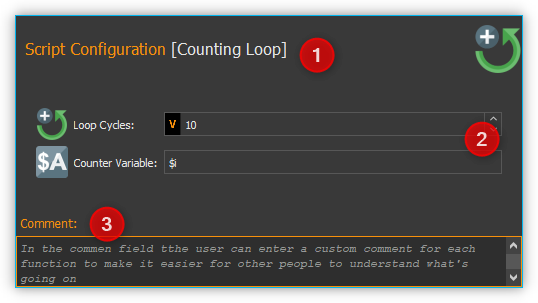
The configuration area consists of:
header with the name of the currently selected function
input- and control elements of the function
comment box to enter any commentary
The input- and control elements ❷ are different for each script function. But all functions provide some common controls like the function caption ❶ in the header and a comment box ❸ at the bottom of the configuration area.
Changing Function Caption
In the header of the configuration area you can change the caption of the function. It allows you to use “talking” function names that make it a lot easier for you or third parties to read and understand your scripts later.
To change the function name, you can either click with the left mouse button on the function name in the header or you can click on the name with the right mouse button and select the context menu item, (see figure below).

In the input dialog that now appears, you can enter a new name for the function.
The following example shows a short program with the default function names on the left side and the same program with own function names on the right side:
Default function names |
Application-specific names |
|
|


{kind=link}
{kind=link}
{kind=link}
{kind=link}
Tip
Enhance the readability, understandability and maintainability of your scripts through the use of speaking, application-specific function names.
Enter Comment
In the comment field you can enter a comment that will allow other users to understand your scripts better and to follow the flow of execution easier.

When you move the mouse pointer over a function in the Script Editor the comment of this function will be shown in a message box (see figure above). So you can read the comment of a function without having to open the configuration area of that function.
Script Input Fields
In many script functions, you will see special input fields in the configuration area, which are marked with a coloured V:
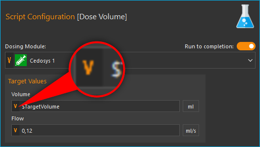These special input fields allow you to:
the input of values (e.g. 0.23 or -24)
the use of Script Variables (e.g.
$TargetFlowor$Voltage)the use of Device Properties (e.g.
$$Nemesys_M_1.ActualFlow)the use of inline JavaScript (e.g.
${ $$Nemesys_M_1.ActualFlow * 2 })
Insert Script Variables
To use script variables, you only have to enter a dollar sign $ in the input
field. Then you are immediately shown a selection list of variables that are
available at the current position in the script. You can simply select a
variable from the list or continue typing the name manually:

The value of the variable is then used at runtime for the corresponding
parameter. In the example above, the value of the variable $TargetVolume is
used for the script parameter Volume at runtime.
Insert Device Properties
To insert Device Properties, simply right-click in the input field and then select the menu item :

Then select the device property in the dialogue that appears. The identifier for the device property is then inserted into the input field.

At runtime, the value of the device property is read and
passed to the script. In the example above, the current
flow rate of pump Cedosys 2 is used ($$Cedosys_2.ActualFlow)
to set the flow rate of pump Cedosys 1.
Use inline JavaScript
Inline JavaScript can be used in special input fields, allowing for short
calculations to be written directly within the field, beginning with
${ and ending with }.
${ /* inline code */ }
In the following example, the flow rate for the Nemesys S 1 pump is
to be calculated based on the analogue input signal of channel
$$Nemesys_S_1_AnIN. For this purpose, the analogue input signal
is to be scaled by a factor of 0.1:
Important
Use Inline JavaScript only for very simple calculations, such as scaling. For more complex calculations or logical comparisons, you should use the corresponding JavaScript function or the Set Variable function.
Insert Device Handle Variables
Device handles are device identifiers that begin with two
dollar signs $$ and uniquely identify a device. A device
handle is e.g. $$Nemesys_M_1. Device Properties always
consist of a device handle and an identifier for the
corresponding property of the device. For example,
the device property $$Nemesys_S_1_AnIN1.ActualValue
consists of the device handle $$Nemesys_S_1_AnIN1 and
the property ActualValue. This means that if you know a
device property, then you also know the corresponding device handle.
Device handles are not usually used in normal input fields. However, many device-specific script functions have a selection field for selecting the device for which a command is to be executed. If this selection field is marked with a coloured V, then you can also pass variables there that contain a device handle.
In the example above, the variable $PumpDevice, which contains the
device handle for the pump for which a dosing process is to be started,
is passed to the Dosing Module selection control.
Programming
Adding Functions
Functions are activated via drag & drop from the Script Pool to the Script Editor. To do this, proceed as follows:
In the Script Pool, left-click on the function that you want to insert ❶ and hold down the mouse button.
Move the pointer to the desired position within the Script Editor window.
As soon as you release the mouse button ❷, the selected function will be inserted into the Script Editor.
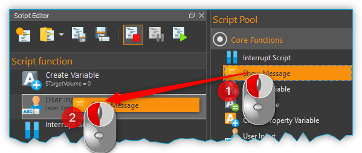
The function is inserted according to where the mouse pointer is positioned when you release the mouse button. The following scenarios are possible (figure below):
If you release the mouse button atop an existing function, the new function will be inserted immediately before that existing function.
If the mouse button is released atop a function sequence (for example, a loop), the new function will be inserted at the end of that sequence.
If the mouse button is released on an empty area at the end of the function tree, the function is added at the end.
Selecting Functions
To move, copy or delete functions, you must first select them. You can either select a single function by clicking on it, or you can select a continuous sequence of functions at the same hierarchy level.
When you select an item in the usual way with the left mouse button, the selection is cleared and the new item is selected ❶. However, if you press the Shift key while clicking on an item ❷, all items between the current item and the clicked item are selected or unselected, depending on the state of the clicked item.
Moving Functions
Analogous to inserting a new function from the Script Pool, you can move the functions to new positions within the function tree via drag & drop. Again, the same insertion rules apply as above.

There is alternative way for moving functions up and down the list: First, make a right mouse click on the function that is to be moved. This will open a context menu from which you may then select Move up or Move down, respectively (figure above). Alternatively, you can use the keyboard with the Ctrl + ↑ or Ctrl + ↓ shortcuts.
This latter method may only be used to move functions up or down within the current sequence. If you want to move a function to a completely different position within the function tree, this can only be done via drag-&-drop.
Important
Move up and Move down only moves the current function. Even if several functions are selected, only the current function is moved. If you want to move the entire selection, you can do this by dragging and dropping.
Deleting Functions
There are two ways to delete functions:
Select the functions you want to delete and then click the context menu entry Delete.
Select the functions you want to delete and then press the Delete key of your keyboard.
Copying Functions
Similarly, functions can be copied either by using the context menu via the mouse or using key combinations via the keyboard. If you work with the context menu, simply select Copy and then Paste from the menu (figure below); with the keyboard, use the Ctrl + C shortcut to copy and Ctrl + V to paste.

This is how you copy a function to a new position:
Select the functions you want to move.
Copy the functions via Copy of the context menu or via the keyboard and Ctrl + C.
Select the function before which you want to insert the copied function by left-clicking it.
Paste the copied functions via Paste of the context menu or via the keyboard and Ctrl + V.
To insert the same functions at multiple points of the function tree simply repeat steps 3 and 4 (above).
Tip
To quickly duplicate functions, you can also use the menu item or the Ctrl + D shortcut.
Grouping Functions
To improve the clarity and readability of your script, you can quickly and easily group sequences of functions into function sequences. To do this, simply select a contiguous set of functions, and then click Convert Selection To Function Sequence in the context menu.

The selected functions are now replaced by a function sequence containing the selected functions.
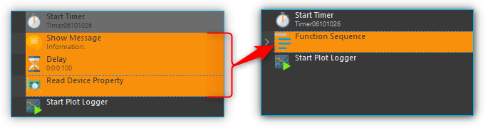
Disable / Enable Functions
In classical text-based programming languages there is the feature to temporarily disable source code by commenting it out. The Script system offers a comparable functionality. To disable functions, select the functions in the script editor and then choose from the context menu. Alternatively, you can also use the shortcut Ctrl + /.

When you disable functions, they are inserted into a Disabled Functions sequence. During script execution, the content of this sequence is simply skipped.

To re-enable disabled functions, select a single Disabled Functions sequence, then use the same menu item / keyboard shortcut as for disabling.
Editing Function Parameters
As soon as you select a function from the function tree, the operating elements appear in the Script Configuration area that allow you to configure the selected function. Edit the function parameters as required.
Showing Function Tooltip
If you move the mouse cursor over a function, a tooltip window is displayed for this function after a short time (see figure below). In this window, you will get all information about this function at a glance: function name ❶, user comment or function description ❷ and function parameters ❸.

Variables
Introduction to variables
The script system of supports the use of variables. Within script programs, variables serve as containers for calculated and device values. Their values are generated during program execution from, for example, loop counts or sensor data. Each variable is defined by a name. Script functions that support the use of variables may then use the values stored in these containers, e.g., to trigger value-dependent events.
Setting Variables
Before variables may be used by a script, such variables need to be defined. There are two possibilities to setup variables:
Explicit: Variables are defined explicitly by the user, e.g., via the function Create Variable.
Implicit: Implicit variables are created via functions that offer variables by default, such as the counter of the Counting Loop function.
Naming Variables
There are some important requirements to keep in mind when naming
variables: Every variable is called within a program script via an
essentially freely definable name. This name serves to uniquely
identify that variable; different names signify different variables. The
$-prefix clearly identifies a name and its use as a variable. The
scripting system is case sensitive: $Var is different variable than
$var.
Additionally, the following rules apply when naming variables:
Variable names have to start with the Dollar symbol ($) and must not themselves contain a $-symbol.
Only alphanumeric characters are allowed (a-Z, 0-9).
Special characters (such as, $, &, /, -, …) are not allowed.
Variable names must not start with a number.
Tip
You can display the contents of variables using the Show Message function, e.g. to check the results of calculations.
Visibility Range of Variables (Scope)
The visibility range (scope) of a variable is that part of the program within which that variable is visible, i.e., available. Scripts are trees with an essentially unlimited number of branches and levels; a variable, i.e., the value it returns, is only visible, i.e., available to be used, at that level at which it has been defined plus all its sub-levels.
The following example illustrates the scope of variables:
In the following example program the variable $a is visible in the red
marked area - i. e. usable by script functions (figure below):

Variable $b, on the other hand, is only visible within a specific
function sequence (figure below).
The counter variable $i of the counting loop is only visible in those
functions that are in the counting loop:

The scope of variable $c , which has been setup within
the counting loop, is only available within that counting loop, too, as
no other sublevel has been added at this point:

It is important to note that, if two variables have the same
name, the variable that has been defined later (i.e., at a lower level)
will shadow the variable defined earlier (i.e., at a higher level).
In the example above, if $c would have been named again as $b,
the later-defined value (i.e., 2) would replace the earlier-defined value
(i.e., 1).
Important
If a lower-level variable has the same name as a higher-level variable, the lower-level variable will supersede the higher-level variable. That is, functions at the lower level cannot access the value of the higher-level variable of the same name and will use „newer“ value instead.
Using Variables
Variables can be used with all functions that support them. Calling a
variable to, e.g., set or calculate a value, requires the use of the
dollar symbol ($) as a prefix: To use (call write to) the variable a,
the required syntax is: $a.
Important
Variables get assigned a valid value only after they have been assigned a value via being run through a relevant function (e.g., Create Variable). If you are using the action Run From Here to start a script, variables may not have been assigned a valid value yet if the respective assignment function follows later in the sequence or has been skipped.
Functions that support the use of variables have the relevant input boxes highlighted by a yellow V (see figure below). Here you can insert the name of a variable instead of a numeric value that is to be used subsequently within the relevant section of the program script.

Tip
Nearly all input fields that support variables allow for direct access of device process data via device property identifiers (see Device Property Identifiers).
Auto-Completion of Variable Names
Input boxes that support the use of variables, feature auto-completion to aid the selection and input of valid variable names: Upon inserting the $-symbol, a list will appear that contains all variable names defined so far (see figure below).
Every additional character that you enter will cause a filtering of that list according to the character sequence inserted thus far. You may use either the ↑ or ↓ of your keyboard or the mouse to select a name from that pre-filtered list. Accept the selection by pressing the Enter key.
Device Property Identifiers
Nearly all input fields that support variables (see Using Variables) allow for direct access of device process data via device property identifiers. Just click with the right mouse button in the input field and select the menu item Insert device property (see figure below).

A dialog for selecting the process data is displayed (see figure below).
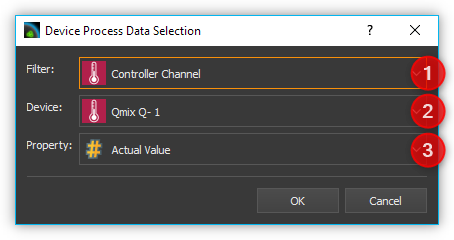
In this dialog you can select which type of device you want to access in the selection box Filter ❶. Select a specific device in the selection box Device ❷ which contains the filtered list of devices. Finally select the process data to be accessed in the Property ❸ field.

The selected process data identifier will be entered into the input field. Similar to variable names, the process data identifiers have a particular form:
$$DeviceName.DeviceProperty
Each identifier starts with two dollar signs. A point separates the device name from the device property name. The entire process data identifier must not contain spaces or other special characters.
Important
The device name and the name of the process data have a normalized form. All spaces are removed and replaced by underscores. The device name is the unique name of each device and may be different from the device caption that can configured by the user.
When the script function is executed, the process data is read from the device and used as function parameter for the script function.
Programming your own script functions
Create a script function
In addition to the script functions available in the script pool, you have the option of programming your own script functions to use them later in your scripts. To implement an own script function, proceed as follows:
Step 1 – Create a new script
Click on the button Create New Script ❶ to create an empty script. Then click on the Save Script button ❷ to give the script function a name and then save it with this name. The name of the script function is then displayed in the script editor header ❸. In this example we use the name AddValues because we want to implement a simple function that adds two values.
Step 2 – Define function parameters
You can define function parameters and return values for your function. Function parameters are values that are passed to the function when it is called. Return values are values (e.g. results of calculations) that are returned by the function to the calling script. Up to 10 function parameters and up to 10 return values can be defined for each function.
To define parameters and return values, click with the mouse on a free area in the script editor or on the script editor’s header ❶ (figure below), where the name of the function is displayed.

The script pool now shows the configuration window for the script. Here you can add function parameters ❷ or return values ❸ by clicking on the Add buttons.
For this example, click twice on the Add button ❷ to add two function parameters. Then click on the first parameter name (figure below) and give it a more meaningful name: Summand1:
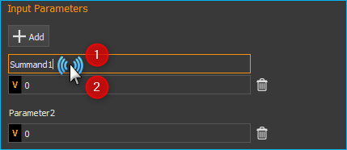Then enter the default value 0 ❷ for the parameter. Now click on the second parameter name and rename it to Summand2.
Step 3 – Define return values
Now click once on the Add button in the Return Values ❶ area (figure below) to add a return value. Then click on the first return value name and rename it to: Sum.
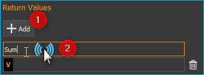Now save the script function to store your changes. The configuration area of the script function should now look like this:

Step 4 – Implement function logic
All function parameters and return values are available within the
script as variables that can be read and written. I.e. the script can
now read the transferred values from the two variables $Summand1 and
$Summand2 and save the result of the calculation in the variable
$Sum and thus transfer it back to the calling script.
To perform the addition, insert a Set Variable script function into the script and set the type of the variable to JavaScript Expression.

In the Name field, enter the name ❶ (see figure below) of the variable
which should store the value – in this case, the variable $Sum.
In the input field for the JavaScript code ❷ you can now enter the addition of
the two variables $Summand1 and $Summand2.
Step 5 – Give the function a meaningful name
Click into the function name label ❶ and give the function a meaningful, unique, short and descriptive name. This name will be shown in the script editor as the function name later. Here we use the Name Add Values ❷:

Step 6 – Add an optional comment
Click into the Comment field and add a n optional comment that helps the user of your function to understand its parameters, return value and its usage:

Step 6 – Assign an optional custom icon
If you use your functions in the script, the standard icon will be the icon of the Script Function Call:

If you would like to improve your function with a custom SVG icon, then click the Select Icon button. The software shows an icon selection dialog with a library of all icons loaded in the software. You can select an icon, by double-clicking it ❸.
You have two options, two filter the icon library. The first option is to select a certain plug-in from the list ❶, if you are interested only in icons from this plugin. The second option is, to enter a filter expression into the filter text box ❷. You can combine both filter options:
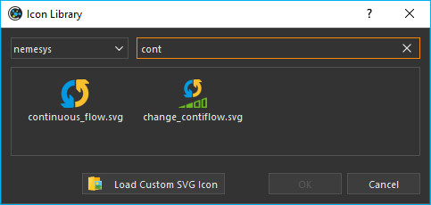If you do not find an icon in the library, you can load a custom SVG icon by clicking the Load Custom SVG Icon button below the icon list. Here in this example we use this option to choose a custom sum icon. As soon as you have selected the icon, the icon of the function in the script editor ❶ and in the configuration panel ❷ is updated:
Tip
If you would like to restore the default icon, click the Clear Icon button in the script function configuration panel.
Step 7 – Save the function
If you have finished all your modifications, the you should save the final function again.
Step 8 – Test your function
Finally you can test your new script function. Click on the Run Script button ❶ (figure below) - no error should occur and the result of the addition should be displayed in the script editor in the Set Variable function ❷.
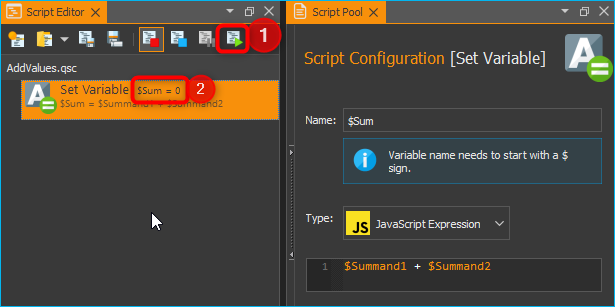If errors occur, correct them and save the script function again.
Use your own script functions
Click on the button Create New Script ❶ to create an empty script. Then click on the Save Script button ❷ to give the script function a name and then save it with this name. The name of the script function is then displayed in the script editor header ❸. In this example we use the name CustomScriptFunctionTest.
Add a Create Variable function to the script as the first function and configure the function as follows.

Now insert a Script Function Call from the Core Functions category into the script as the second function.
A file selection dialogue pops up where you can select the external
script function to be called by the script. Select the example function
AddValues.qsc that we created in the previous section. The
function is inserted. The script editor ❶ and the configuration
panel ❷ both show the custom icon. For the
function parameters Summand1 and Summand2 ❸, enter two values as a
test, e.g. 4 and 3. You can also use script variables in these fields.
Enter the variable $Result in the return parameter Sum. In other
words, the return value of Sum is stored in the variable $Result.
The function should now be configured as follows:

Now add a ShowMessage function as the last function to output the
value of the $Result variable. Enter the following in the
Message field:

Your script should now look like this:
Now run the script. The Show Message function should show you the
result of the call to AddValues.qsc in a window and in the event log.
Tip
By using your own script functions, you can structure your script and break it down into reusable and easily maintainable individual components.
Edit script function
To edit a script function later, you just need to open it in the script editor. You can do this directly from the Script Editor by right-clicking on a custom function and selecting the context menu item .

Important
Opening a script function for editing will replace the current open script in the Script Editor with the script to be edited.
Script User Library
The Script Pool contains an initially empty User Library category. This category enables a project specific grouping of custom script functions in a kind of user library. This allows quick access to frequently used functions and quick addition of user-specific functions to the script editor via drag & drop.
The User Library category shows the content of the UserLibrary folder
inside of the current project Scripts folder. To browse the content
of the this folder in the file explorer, just right click into the User Library
category and select the menu item .

To add functions to the User Library category, you just need to save them
into the UserLibrary folder or any sub folder inside of the
UserLibrary folder or you use your file explorer to copy the functions
into the UserLibrary folder. When you have added new functions
to the User Library, you need to refresh the user library. To do this,
right click into the User Library category and select the menu item
.
Important
To display newly added functions in the User Library you need to refresh the library via context menu item .
The User Library category also
takes into account subdirectories in the UserLibrary folder.
That means, subdirectories will be shown as folders in the User Library category.

By default each folder is shown with a folder symbol ❶ but you can
provide a custom icon for each folder. Just copy an SVG icon with
the same name into a folder, to set it as folder icon. In the example above
the User Library contains the folder Robot Functions. This folder
contains the file Robot Functions.svg. If the software detects an
SVG icon in a folder with the same name like the folder, it will set it as
folder icon ❷ in the Script Pool.
To open a user function from the User Library for editing in the Script Editor right-click on the function and select the context menu item .

Script Autostart
The script system can be configured to automatically load and start a script after successfully connecting to the device hardware. The dialog with the corresponding settings can be opened via the menu item in the main menu of the application.
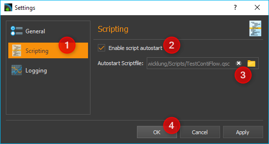
You can now configure the script autostart in the Settings dialog of the application. First select the settings category Scripting ❶. Now you can activate the script autostart ❷ in the right area. You can select the script file to be loaded and executed via the Autostart Scriptfile ❸ input field. If this field is empty, the script is executed which is loaded when the application is started, i.e. the script which was open when the application was last used. Finish the configuration by clicking OK ❹.
If you want the software to start up automatically and execute a script after your computer has booted, then proceed as follows:
Insert QmixElements.exe into the Windows Autostart to start the software automatically after booting the computer.
Open the dialog with the global settings via the main menu of the application ().
Select the General settings category and activate the auto connect option. This will cause the software to automatically connect to the device hardware after start-up.
Then select the Scripting setting category to configure the script autostart
Script Error Handling
No matter how great we are at programming, sometimes our scripts have errors. They may occur due to our mistakes, unexpected user input, when parameters are out of range, errors in communication with devices or a thousand other reasons.
If an error occurs in the script, the standard reaction is as follows:
the script execution is interrupted ❶
the script stops at the function that caused the error ❷
an error message is displayed in the Event Log and the warning that the script execution was interrupted ❸
since the script is interrupted, parallel sequences are also not executed any longer
the script can only be continued by clicking the Start button ❹

This type of error handling may be unacceptable, for example, in the case of automatic control via the I/Os of a PLC or also due to the requirements of a certain user application process - e.g. if parallel sequences should continue to run, a PLC should be able to react to errors or reset errors or if manual intervention by the user is not possible.

But there’s a Try…Catch function that allows us to “catch” errors so the script can, instead of interrupting, do something more reasonable such as handling the error or bringing devices into a safe state. If an error is caught in a Try…Catch block, only the function sequence in which the error occurred is affected - the script continues to run and parallel sequences are still executed.
All details on error handling using Try…Catch can be found in the documentation for the Try…Catch block.
Debugging Scripts
When you develop a script program, there are several ways, to find and debug errors. In the following sections we present some features that help you debug scripts.
Single Step Operation
single-stepping allows you to have more control of viewing individual actions of the program. With single-stepping, you can execute a single function at a time, causing the program to pause after the function completes. To use the single step mode, proceed as follows:
 Activate the single stepping mode by pressing the
Enable / Disable Single Stepping button.
Activate the single stepping mode by pressing the
Enable / Disable Single Stepping button. Use the Execute Single Step button to trigger the execution of
the next step. Press this button as often as you want to execute further
single steps.
Use the Execute Single Step button to trigger the execution of
the next step. Press this button as often as you want to execute further
single steps.- Deactivate the single stepping mode by pressing again the
Enable / Disable Single Stepping button.
 Continue normal script execution by pressing the
Run Script button.
Continue normal script execution by pressing the
Run Script button.
This allows you to go through your program step by step and observe the process at your leisure. You can activate or deactivate the single-step mode at any time - even while your program is already running.
Activate / deactivate debug mode

The debug mode can be activated and deactivated via the
context menu of the script editor. This sets
the value of the global script variable $DebugMode to true or
false. I.e. you can then execute code or output additional debug
messages depending on this variable in the script. For example, you can use
the Log Message function to log messages that are only output when debug
mode is active.
Insert Breakpoints
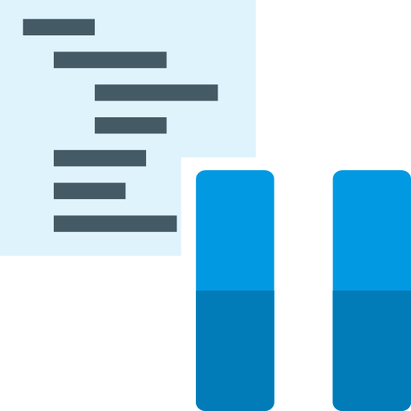{kind=link}
You can interrupt your script at certain points by inserting an Interrupt Script function. This allows you to interrupt the program flow at specific points to examine the state of variables. If you insert the interrupt function in a Conditional Sequence, you can interrupt the program conditionally when certain events occur or variables have certain values.
In the following example, the program flow is interrupted when the value of the
variable EmployeeName has the value John.

Printing Debug Messages
The runtime behavior of the program is changed by single-step operation or the insertion of breakpoints. I.e. the sequence is slowed down or interrupted. If you use debug messages to display the program flow, the value of variables or the value of device properties, the runtime behavior is hardly affected.
To output a debug message, you just need to insert a Log Message
function at the point in the program where you want to write a message to the
event log. In the following picture, for example, the value of the $Flow
variable is output to the event log in each loop cycle:

The event log then displays each recorded message with a timestamp. This allows you to analyze the output values in a temporal context:

Disable Functions

To test certain program sections in isolation, to block the execution of functions during debugging, or to test alternative implementations, it may be necessary to temporarily disable functions. Disabled functions are skipped during program execution. This corresponds to the functionality of commenting out source code in text-based programming languages.
For details on how to disable functions, refer to the section Disable / Enable Functions.
Display variable values
To display the current value of a script variable, simply move the mouse pointer over a Create Variable or Set Variable function in which this variable is accessed. The current value of the variable is then displayed at Current Value.
In the example above you can see a script in which the value of the variable
$Test is changed by three different functions. After the execution of
the script, the mouse pointer is moved over the Create Variable function.
Although the value 0 is assigned in this function, you see the current value 2
in the message window, because the two following Set Variable functions have
already been executed.